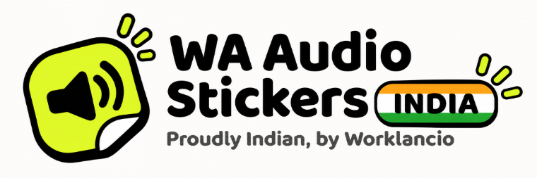

You're all set. Let's make your first sticker with sound.
- Open WhatsApp Web at web.whatsapp.com and open any chat.
- Click the lime tab on the right edge of WhatsApp, the extension button in your toolbar, or press Alt + Shift + S.
- Pick a clip: a video, GIF, photo or audio file. Or record your voice or a video right there.
- Cut the best part, add a caption in Hindi, English or Hinglish, then press Make sticker.
- Send to this chat. Your friend taps it and hears the sound.
Tip: pin the extension. Click the puzzle icon in Chrome's toolbar, then the pin next to WA Audio Stickers India.
Safe by design
- Works only on web.whatsapp.com.
- Everything is made on your computer. We have no server and see nothing.
- Sends only when you click, one sticker at a time.
Unofficial. Not made by, linked to or approved by WhatsApp or Meta.
Made in India by Worklancio
We build websites, apps, WordPress plugins and Chrome extensions for businesses. If you liked this, you'll like working with us.